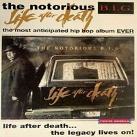

Discografia de The Notorious B.I.G
Ready to die, el album debut de Christopher que fue lanzado el 13 de septiembre de 1994, bajo los sellos discograficos de Bad Boy Records y Arista Records. Con 17 canciones fue un rotundo exito, la revista Rolling Stone coloco el album en el puesto #23 en "100 mejores albumes debut de todos los tiempos"
Life After Death es el segundo álbum del rapero The Notorious B.I.G., lanzado el 25 de marzo de 1997. En 2003, el álbum fue elegido en la posición #483 por la revista Rolling Stone en la lista de los 500 mejores álbumes de la historia de la música y, hasta el momento, es el álbum de Hip Hop más vendido de la historia, con más de 30 millones de copias vendidas por todo el mundo.
A pesar de ser una discografia muy corta comparada con la de otros artistas de Hip-Hop contemporaneos, el exito e impacto de la misma no tiene precedentes ni comparacion con la de ningun artista de hoy en dia, lo cual demuestra que su talento fue inmenso.
No queda otra opcion que especular de lo que nos perdimos por su muerte abrupta y temprana.